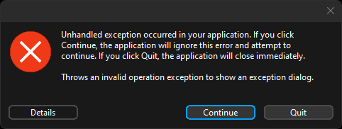
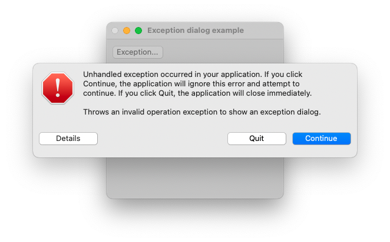
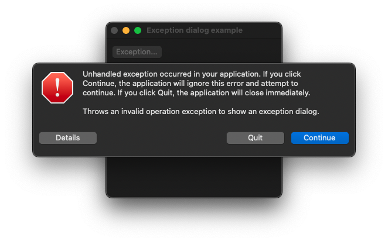

|
xtd
0.2.0
|
Loading...
Searching...
No Matches
exception_dialog.cpp
demonstrates the use of xtd::forms::exception_dialog dialog.
- Windows


- macOS
- 

- Gnome


#include <xtd/forms/application>
#include <xtd/forms/button>
#include <xtd/forms/exception_dialog>
#include <xtd/forms/form>
#include <xtd/invalid_operation_exception>
using namespace xtd;
using namespace xtd::forms;
public:
form1() {
text("Exception dialog example");
controls().push_back(button1);
button1.location({10, 10});
button1.auto_size(true);
button1.text("Exception...");
button1.click += [&] {
try {
throw invalid_operation_exception("Throws an invalid operation exception to show an exception dialog.", current_stack_frame_);
dialog.exception(e);
if (dialog.show_sheet_dialog(*this) == dialog_result::cancel)
application::exit();
}
};
}
private:
button button1;
};
auto main()->int {
application::run(form1 {});
}
Represents a common dialog box that displays exception dialog.
Definition exception_dialog.h:36
std::reference_wrapper< const std::exception > exception() const noexcept
Gets exception reference.
Represents a window or dialog box that makes up an application's user interface.
Definition form.h:52
The exception that is thrown when a method call is invalid for the object's current state.
Definition invalid_operation_exception.h:18
Defines the base class for predefined exceptions in the xtd namespace.
Definition system_exception.h:24
#define current_stack_frame_
Provides information about the current stack frame.
Definition current_stack_frame.h:16
The xtd::forms namespace contains classes for creating Windows-based applications that take full adva...
Definition about_box.h:13
The xtd namespace contains all fundamental classes to access Hardware, Os, System,...
Definition system_report.h:17
Generated on Sun Nov 12 2023 11:18:37 for xtd by Gammasoft. All rights reserved.